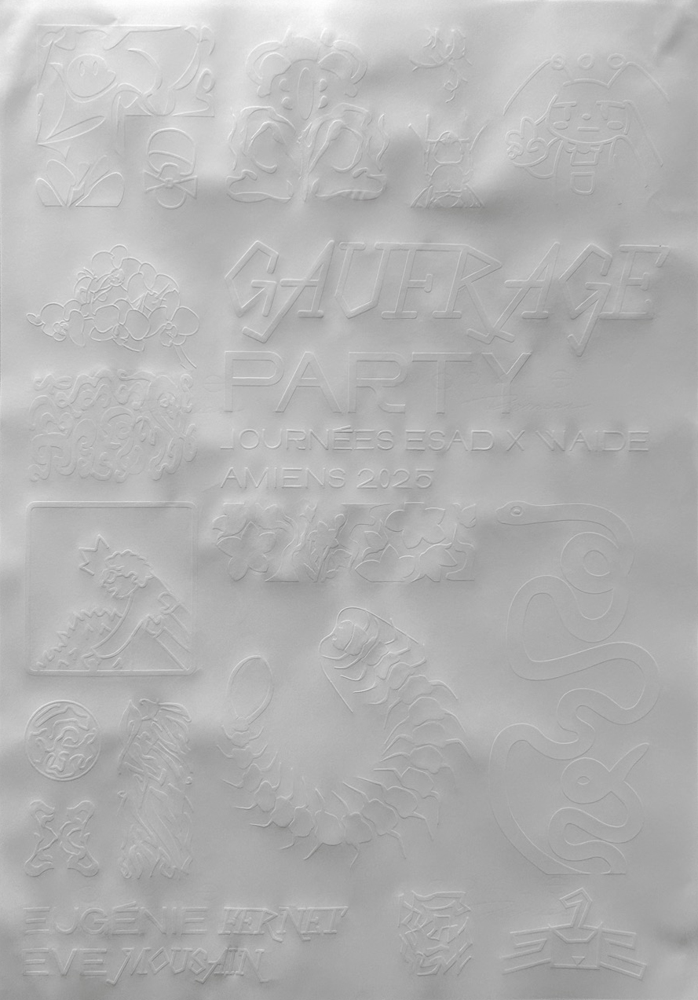
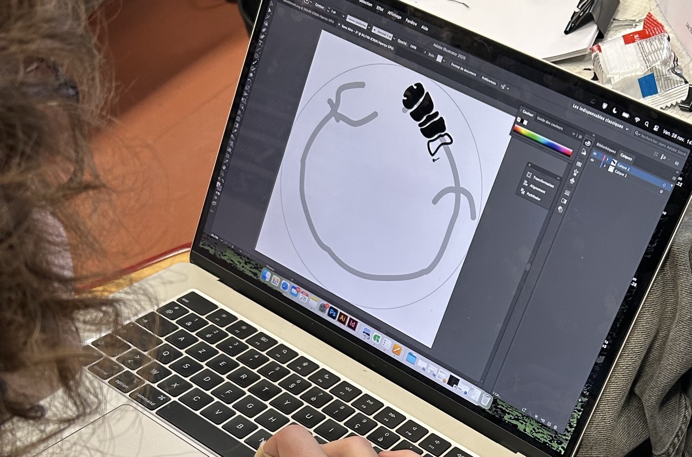
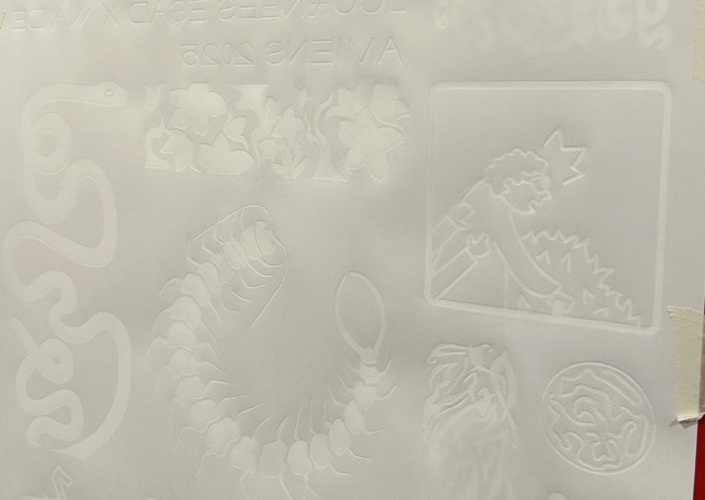
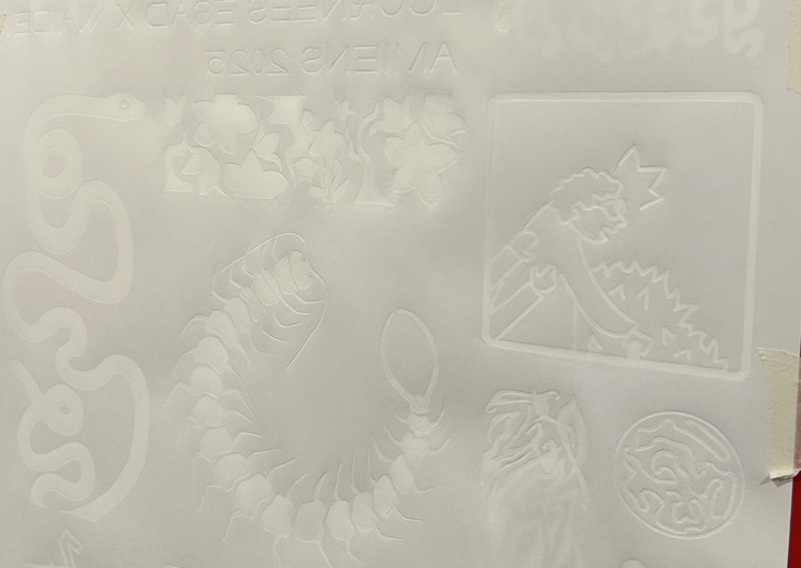
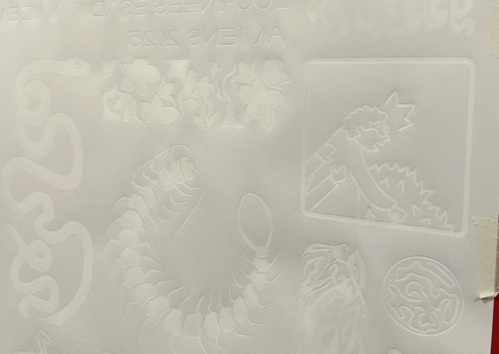

GAUFRAGE PARTY
À l'occasion des journées "Esad et Waide" 2025, où des workshops sont organisés par et pour les étudiants, j'ai mené un atelier d'initiation au gaufrage (embossage) fait maison, à partir d'une technique que j'ai imaginée. L'objectif de ce workshop était de faire découvrir aux participants cette technique, afin de créér une affiche collaborative, la toute première affiche faite uniquement en gaufrage, sans impression. Nous avons choisi de répartir la surface en différentes zones, afin que chaque participant puisse explorer et expérimenter librement sur sa zone attribuée. Workshop mené avec Eve Mousain. Durée : 1 journée, nombre de participants : 14




 


×